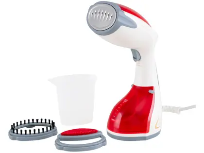

Vaporizador/Higieniador de Roupas Black&Decker BDV2000V Portátil 200ml 1200W com Acess - 1200W
Inovação no cuidado com as roupas e tecidos com o vaporizador/higienizador de roupas BDV2000 da Black&Decker! Leve e compacto, hidrata e relaxa as fibras dos tecidos e ainda é indicado para neutralizar odores e higienizar itens como casacos pesados, travesseiros, bichos de pelúcia e estofados de casa e carros. Possui gatilho para controle de vapor, utilize o produto em qualquer ângulo, sem respingos. Ele remove pelos dos tecidos com um acessório que permite retirar pelos do seu sofá, estofados e roupa de cama. Pode ser usado com vapor contínuo ou jatos. Muito mais vapor para remover amassados difíceis. Ele conta com reservatório removível de 200ml de capacidade útil, vem com acessórios e potência de 1200W, que gera mais vapor para remover os amassados. É ideal para desamassar ternos e vestidos de festa.
Ficha Técnica Marca Black&Decker Referência BDV2000V-B2 Modelo BDV2000V Tipo de Vaporizador Portátil Potência 1200W Indicado para Roupas, carpetes, bichinhos de pelúcia, interior automotivo Capacidade do Reservatório de Água 200ml removível Tempo de Aquecimento 3 a 5 minutos Características Luz indicadora. Controle antigotejamento. Desligamento automático Temperatura Máxima 140ºC Controle de Intensidade do Vapor Gatilho para controle de vapor Comprimento do Cabo Elétrico 2m Acessórios Escova pet para remoção de pelos em estofados e cortinas, escova para tecidos delicados e copo medidor Voltagem 220V Consumo Aproximado de Energia 0.055 kw/h Cor Vermelho e Branco Recomendações de Uso Mantenha o produto sempre limpo e em bom estado de conservação. Não vaporizar sobre metal, como botões e etiquetas. Direcione o jato de vapor cuidadosamente ao redor de acessórios metálicos Certificado Homologado pela Inmetro Número SGS-OCP-0040 - BRA20/00765 Peso do Produto 887g Peso do Produto com Embalagem 1.104kg Dimensões do Produto Largura: 10cm Altura: 28cm Profundidade: 15cm Dimensões do Produto com Embalagem Largura: 14cm; Altura: 32cm; Profundidade: 16cm Prazo de Garantia 01 ano (3 meses de garantia legal e mais 9 meses de garantia especial concedida pelo fabricante). Conteúdo da Embalagem 1 Vaporizador, 1 Escova Pet, Escova para Tecidos Delicados, 1 Copo Medidor;
venha cursar GTI na Fatec Jahu!

venha cursar Dsm na Fatec Jahu!